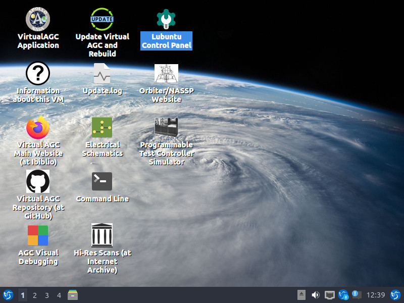
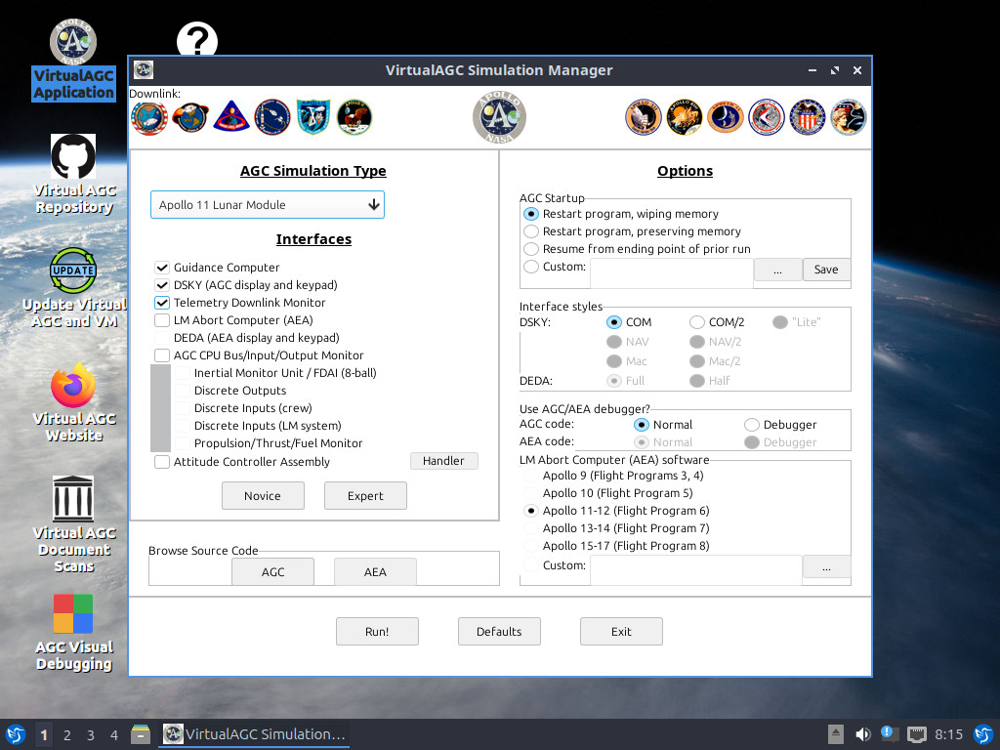
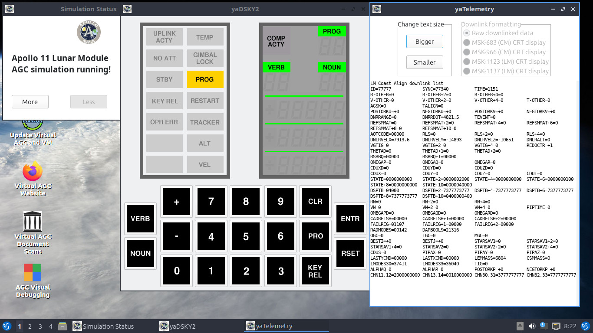
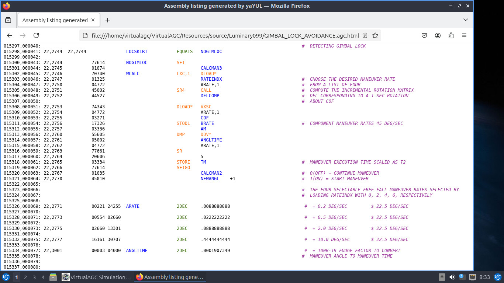
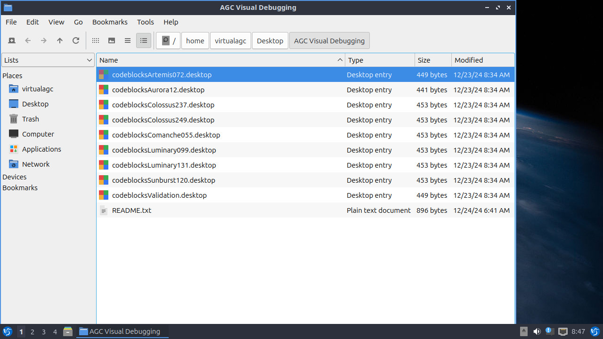
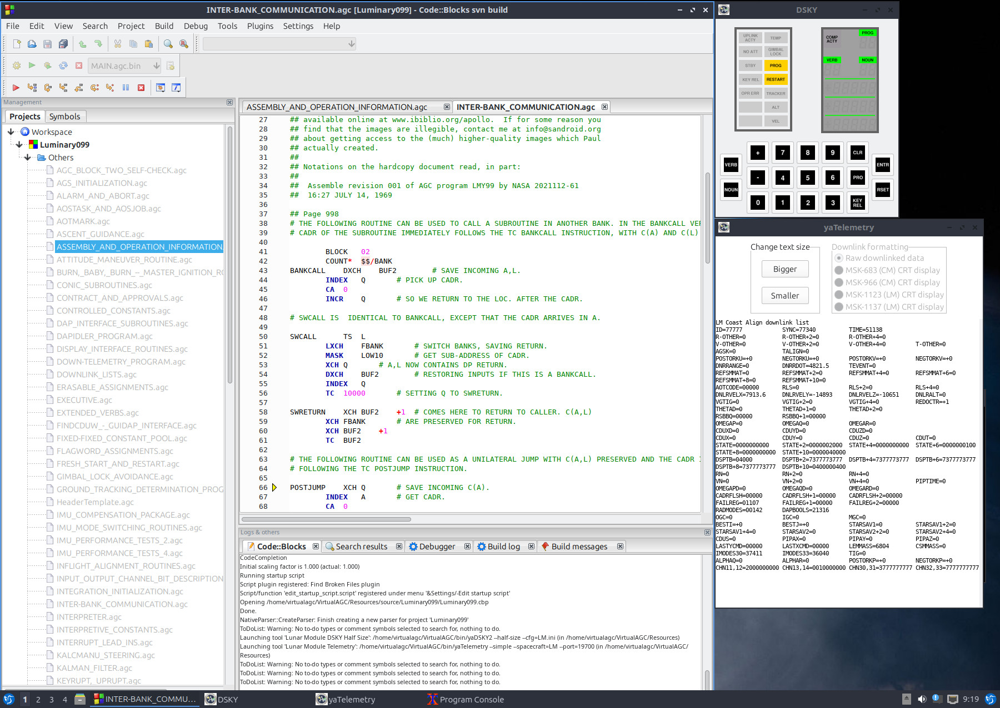
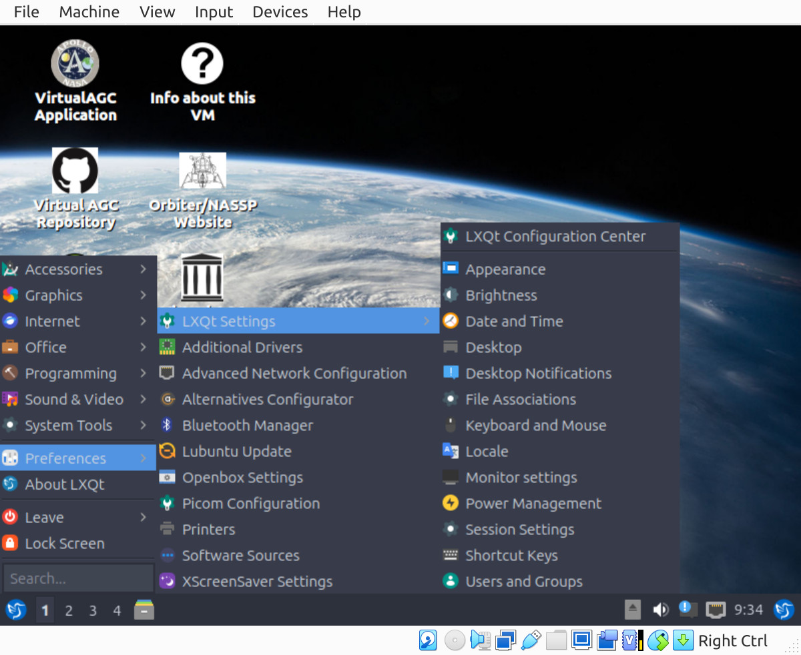
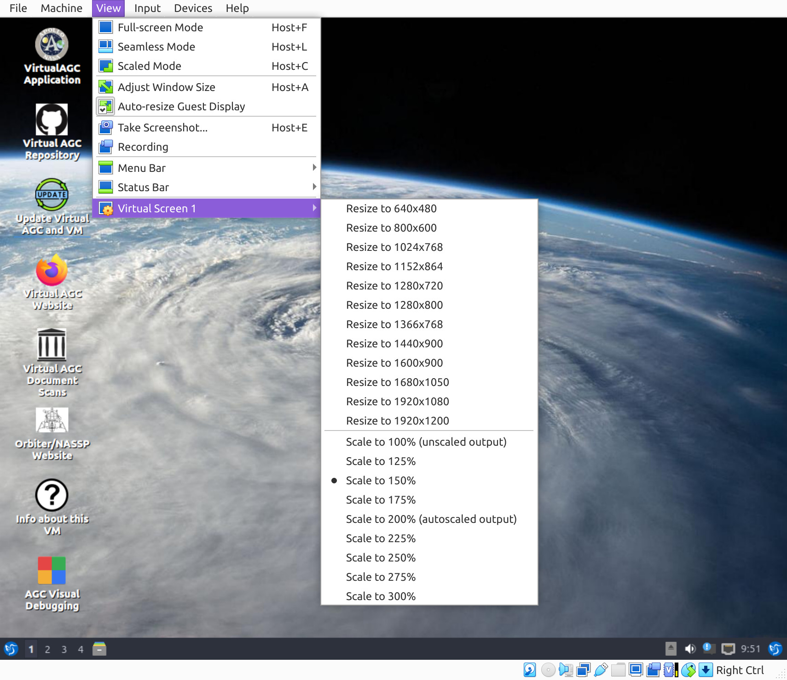

|
Available Downloads
|
Target Platform
|
Description
|
Download
|
Instructions
|
Any
|
Complete source code.
|
Current at
GitHub |
Building
Virtual AGC from source
|
| Windows, Mac OS, Linux, Solaris, FreeBSD |
64-bit 'x86 Virtual Machine (VM) guest
prepared for use with VirtualBox, but with a little effort
in some other popular hypervisors as well:
Hypervisor
|
Host
Systems Supported
|
Virtual
Disk
|
Hypervisor
Cost
|
†Tested? |
Windows
|
Mac
|
Linux
|
FreeBSD
|
Solaris
|
Native Format
|
*Conversion
Needed?
|
| VirtualBox |
Yes
|
Yes
|
Yes
|
Yes
|
Yes
|
VDI
|
No
|
Free
|
Yes (v. 7.1)
|
| QEMU |
Yes
|
Yes
|
Yes
|
No
|
No
|
QCOW
|
Preferred but not required
|
Free
|
Yes (v. 9.2)
|
| VMware Workstation
Pro |
Yes
|
No
|
Yes
|
No
|
No
|
VMDK
|
Yes |
$$$, but free for personal use |
Yes (v.
17.6)
|
| VMware
Fusion Pro |
No
|
Yes
|
No
|
No
|
No
|
VMDK
|
Yes |
$$$, but free for personal use |
No
|
Hyper-V
|
Yes |
No
|
No
|
No
|
No
|
VHD
|
Yes |
Free
|
No |
| Parallels |
No
|
Yes
|
No
|
No
|
No
|
HDD
|
Preferred but not required
|
$$$, but cheaper for
non-commercial use, with a free 14-day trial |
No
|
Notes:
*Conversion of the
downloaded virtual disk from VirtualBox format
(VDI) to the native format of other hypervisors
mentioned above can be performed by both
VirtualBox or by QEMU.
†All testing was
done on a Linux host machine, and the VM worked
fine for all hypervisors I was able to test.
|
The VM provides the ability to run or build all
software provided by the Virtual AGC Project that's related
to Gemini, Apollo, or the Space Shuttle, including software
not covered by the build-instructions found later on this
page. This avoids the necessity of manually performing
tricky builds and installations, as well as the risk that
these builds or installations will fail on your particular
computer platform. However, it does not (yet?) include
original flight software source-code for the LVDC or Space
Shuttle that we've been holding back under fear of ITAR
backlash.
Since the VM is a rather substantial download, you would
typically download it just once and then upgrade it in-place
to newer versions of Virtual AGC as desired. This is a
very-simple and convenient procedure, though time-consuming,
and is considerably improved from the prior, now-obsoleted
32-bit VM, and can be performed at any time.
Updates to the VM's Linux operating system are a different
matter, and should only be performed an as-advised basis.
Advisable VirtualAGC VM
operating-system updates:
|
Compressed VM
Last updated, 2025-01-01
Download: 3.5GB
Uncompressed: 13.6GB
In use: Up to 40GB
|
Using
the
VM
|
| Any |
Pre-built versions of Virtual AGC are no longer provided,
other than via the VM. Obsolete downloads and
instructions can still be found at on our
superseded download page(s).
|
n/a |
n/a
|
Contents
The Virtual AGC VM
Use and Updating
of the VM
Virtual AGC can be used in a couple of ways, one of which
(installing it directly on your own computer) is covered later one,
and the other of which is running it in a so-called "virtual
machine" (or VM for short).
The VM approach should work with most host systems supported by the
hypervisor known as VirtualBox,
including any 64-bit 'x86 version of Windows, Mac, Linux, Solaris,
or FreeBSD. Basically, you just install VirtualBox, download
the Virtual AGC VM, and then run it! All of which side-steps
any potential inconvenience in building Virtual AGC from source code
on your own physical computer.
But before talking about how to install the Virtual AGC VM, let's
talk first about how you can use it once it's installed. In
other words, let's have an advertisement for it! One nice
thing about the VM approach is that the virtual machine's "display
screen" can be made as big or small as you like, within the limits
of the size of your physical display. For the sake of my
explanations below, I'll make the VM screen smaller than I normally
would for my own purposes — which would be just to expand it to fill
an entire monitor —, but perhaps appropriately for our modern times
in which people are often more prone to use tiny laptop computers
rather than huge desktop systems.
When the VM is run, the desktop you'll be presented with is
something like this:

(This desktop will actually be surrounded by a border with
VirtualBox's own menu, status bar, and so on, not to mention your
operating-system-provided title bar, but I don't want to complicate
matters so I've omitted such extras.)
What is all of this stuff? Well, it's pretty self-explanatory,
I suspect, but here's a brief rundown starting at the upper left:
- An icon for running Virtual AGC itself via a graphical user
interface (GUI) that we'll talk more about below.
- An icon that loads a web browser and takes you to our software
repository on GitHub.
- An icon that downloads the latest version of the Virtual AGC
software (including any new or updated AGC or AGS source code
that may be in it), and rebuilds it all from source. All
you have to do is click it and then sit back and wait for it to
finish. I'd recommend exiting from the VirtualAGC
application (if it happens to be running) before doing that.
- An icon that loads a web browser and takes you to our main
website at Ibiblio.
- An icon that opens a folder of visual-debugging projects for
various AGC software versions. We'll talk more about that
below.
- An icon that may give you more (and possibly more-up-to-date)
information about the VM than I'm providing here.
- An icon that loads a web browser and takes you to the website
of the NASSP (Apollo) add-on for the Orbiter
spaceflight-simulation system. Alas, Orbiter/NASSP is a
Windows-only system that you cannot run within the Virtual AGC
VM, but the website can still be useful. NASSP integrates
Virtual AGC's emulations of the AGC and AGS computers into their
simulations. NASSP is not, however, affiliated with the
Virtual AGC Project in any official way.
- An icon that loads a web browser and takes you to our
highest-resolution documentation images at The Internet Archive.
If you were to run the Virtual AGC application from its icon, you'd
see something like the following:

You can do a number of things from this VirtualAGC GUI, such as run
the simulation by clicking the "Run!" button at the bottom of the
application's window. With the options shown above, this means
running the AGC software originally written for Apollo 11's Lunar
Module, which happens to be called LUMINARY 99, with a DSKY
(display/keyboard) peripheral device, and with a telemetry
monitor. The screenshot below shows that happening. The
main window of the application disappears when you do that, and what
appears in its place are the various windows for the DSKY and other
peripheral(s), arranged in a way intended to facilitate making
everything viewable at once. The extent to which this
arranging succeeds at making everything visible depends on the
options used and the amount of real estate available on the virtual
desktop. In the example below, the arranger has slightly
overlapped some windows, but has mostly succeeded. To exit the
simulation, you'd just close any one of the open windows; the other
windows would then close automatically, albeit probably with a short
delay, and the main screen of the application would return.
Aside: Actually, if you
close the window labeled "Simulation Status", it won't close the
simulation at all, but rather it closes the simulation
manager. That's a bug, not a feature, but one which I'm at
a loss to fix at present.

Another thing you can do is view the AGC source code (in this
case, for LUMINARY 99), by clicking the button marked "AGC" near the
lower left of the application's window. I did that and clicked
around a few times before creating the screenshot below:

I promised above to talk a little bit about the desktop icon labeled
"AGC Visual Debugging. If you click it, a new window will pop
up that lists a number of the Apollo Guidance Computer software
versions available, though by no means all (or even most) of
them. These are the AGC software versions for which we've
created visual-debugging projects. Hopefully, many more such
AGC versions will be debuggable in the future, but for now these are
the only ones provided. Click on one of them to begin visual
debugging of the associated AGC software version.
(Unfortunately, visual debugging for Abort Guidance System software
is not available.)

Visual debugging AGC software works pretty much as you'd expect, if
you've ever done visual debugging in the past. But like any
tool, the Code::Blocks integrated development environment (IDE) in
which the debugging is performed takes some getting used to.
Clicking on the LUMINARY 99 entry, the Code::Blocks window that
appears looks something like the screenshot below. (Before
making the screenshot, I've actually double-clicked on one the AGC
source-code files in the left-hand pane, and then clicked on "Tools"
in the main menu.)
The reason I've clicked on "Tools" in the image above is that since
I'm illustrating how to debug LUMINARY 99 from the Apollo 11 Lunar
Module, I'll want to start a half-size Lunar Module DSKY (why not?)
and (also why not?) a telemetry monitor as well, both of which are
done from the Tools menu. The various debugging options are
found in the tool bar with the little red right-pointing
arrow. We can start the emulation in a variety of ways.
For example, we might click (twice, for some reason) the "next line"
button that's two to the right of the red arrow; this would start
single-stepping through the software. But in the screenshot
below I've started the program free-running by clicking on the red
arrow (twice), and then have clicked the pause button (once).
You can see that pause has occurred at line 66 in the source-code
file INTER-BANK_COMMUNICATIONS.agc. And from this point we can
do things like set breakpoints, single-step through the program,
view/edit memory locations, and so forth. But the details are
really out of our scope, and you'll want to consult Code::Blocks
documentation online for more info, I suppose. More
information can also be found in our Wiki at GitHub, here
or here.

Customization of the VM
Beyond Virtual AGC itself, you might like to personalize the VM'd
desktop for your own convenience and taste. For example, I
personally think that single-clicking desktop items to activate them
is better than double-clicking them. You might want to
change that. (To see instructions on how to do that,
single-click on the Info desktop icon.) Other examples that
occur to me are adjusting the language, the display size, the time
zone, and so forth, but of course you can make any changes you
like. The VM runs a variety of Ubuntu Linux called Lubuntu,
and you can google how to work with that, or you can use the Info
icon on the VM's desktop to also get a variety of helpful
customization hints. I'll just confine myself here to pointing
out that the Lubuntu menu is called up from the little blue icon at
the lower left of the desktop, and that the Lubuntu configuration
settings can be gotten to from that Lubuntu menu by using
Preferences/LXQt-Settings/LXQt-Configuration-Center as shown in the
screenshot:

Notice, by the way, that unlike all of the other screenshots so far,
the one above includes VirtualBox menu at the top and a VirtualBox
status bar at the bottom. I've included those because I want
to explain that using the Lubuntu configuration center to change the
monitor settings may not give you complete control over the display
resolution: In addition, you may need to make adjustments in the VirtualBox
menu's View/Virtual-Screen-1 settings as in the screenshot below; of
course, I'm not saying you'll use those specific settings,
but just that adjustment both of Lubuntu and of VirtualBox may be
needed. If you have a 4K monitor, setting "Scale to 150%" or
"Scale to 200%" might be useful in making the items on the VM'd
desktop large enough to be easily legible.

Installation of the
VM
The basic steps are these:
- If VirtualBox is not already installed, download and install
VirtualBox, using whatever version is suitable for your
computer system. The Virtual AGC virtual machine (VM) you
will download was created with VirtualBox
7.1.4, but I hope it will work with other versions as
well. Be sure to install not only VirtualBox as such, but
also its so-called "Extension Pack".
- If your version of VirtualBox differs from the one in which
the VM was created, when you run the VM you may be prompted to
reinstall VirtualBox's "guest additions". Do so. If
you do, note that the username and password of the VM are both
"virtualagc".
- The VM is compressed in 7z format for downloading, so if your
operating system doesn't already have software support for 7z
archives, you need to install extra software that provides
it. In Linux, you're probably okay without doing anything,
or at worst just using your distribution's software
repository. For other platforms, a little googling reveals
that the program 7zip
provides these formats for Windows, and there are "unofficial"
installers for 7zip for Mac, Solaris, and FreeBSD.
However, various other programs work as well, I think, such as WinZip.
- Download the current compressed
Virtual AGC VM.
- Extract the contents, resulting in a folder called
"VirtualAGC-VM64". The 7z file is no longer used after
extraction and may be deleted ... though obviously we'd
prefer you retained it for a while to make sure you don't need
to download it again if some mishap occurs. VirtualBox
tends to store all of its virtual machines in the same folder
(on Linux, for example, that folder is "~/VirtualBox
VMs"). It's not necessary to conform to this practice,
though can do so for consistency if you like.
- Run VirtualBox, and from its main menu select
Machine/Add. In the dialog you're presented with, find the
folder just now created for the Virtual AGC VM, and select the
file VirtualAGC-VM64.vbox.
- The Virtual AGC VM will be visible in VirtualBox's manager
program, and you can run it from there.
It's hard to pin down exactly what physical computer resources
you'll need to run the VM. As downloaded, the VM is set to use
4GB of RAM and 4 CPUs, but those settings are adjustable easily by
you within the VirtualBox project settings. I've just now
tried it with 1GB and 1 CPU on my 10+ year old computer, and there
was nothing obviously wrong with how it ran; your experience may
vary.
Perhaps of more concern to you, I've endowed the VM with a
virtual disk that's nominally 40GB. The way VirtualBox
virtual disks work, they are actually usually smaller than the
nominal size, but physically expand as they fill up. So as
delivered, the virtual disk appears to you to be only about 14GB,
but you may later find it using 40GB of your disk! I made it
this large because with the previous generation VM, now
superseded, I had trimmed the virtual disk to a bare minimum and
found it impossible to grow it when I realized it had filled
up. You may think that 40GB is excessive and prefer to shave
off a few (or a lot) of gigabytes. The procedure to do so is
trickier than I'd like, so I won't explain it unless somebody
actually asks me about it; or you can google it.
Finally, technically, for any Linux pros, the VM does not have a
swap partition. You can adjust the VM itself to give
yourself one, but if you're pro enough to desire this, you're too
much of a pro for me to instruct you on the details of how to do
it.
Using Alternate Hypervisors In Place of
VirtualBox
Here's a brief survey of some popular hypervisors:
- VirtualBox
(Windows/Linux/Mac, free).
- QEMU
(Windows/Linux/Mac, free).
- VMware
(Windows/Linux/Mac, commercial, but with a restricted-feature
free version).
- Hyper-V
(Windows only, free).
- Parallels
(Mac only, commercial).
The Virtual AGC VM is only provided in a form specific to
VirtualBox. The VirtualBox native virtual-disk format (VDI)
that we provide in the VirtualAGC VM can be converted to any of
the following virtual-disk formats native to other hypervisors:
- VMDK (for VMware)
- HDD (for Parallels)
- QCOW (for QEMU)
- VHD (for Hyper-V)
As for how to perform such a conversion, either
VirtualBox or QEMU can convert VDI-format disks to any of the
formats listed above.
Details: At least in v7.1
of VirtualBox, conversion of a VDI file can be performed from
the VirtualBox Manager application, from it's main menu:
Select File/Tools/Virtual-Media-Manager. Then right-click
on any VDI file, choose the Copy operation, and select the
desired format to create. Alternately, conversion can be
performed from a command line with a command of the form
"vboxmanage clonemedium ...".
QEMU is more convenient in some ways, since to perform a
conversion you don't even need a full installation of QEMU, but
merely the qemu-img command-line program, which at least
in Linux Mint is a separate installation ("apt install
qemu-utils"). The command to convert to VMDK, for example,
is "qemu-img -f VDI -F VMDK VirtualAGC-VM64.vdi
VirtualAGC-VM64.vmdk". I've not actually tried it myself,
though. It's good that a full QEMU installation
isn't needed for conversion, since the technique for performing
a full install of QEMU can be a tad unobvious. At least in
Linux Mint, the technique is to use "sudo apt intall
bridge-utils virt-manager" and then reboot; QEMU itself can then
be run as the "Virtual Machine Manager". Who would have
guessed?
Additionally, for hypervisors other than VirtualBox,
you'll have to manually create a VM using the native tools
provided by the particular hypervisor, and then attach the
VirtualAGC virtual disk to that VM. In my experience,
creating a VM that uses a pre-existing virtual disk may prove to
be a tricky feat in some hypervisors — which like to create the
virtual disk for you at the time the VM itself is created,
instead of admitting you might already have one —, but I have
faith in you!
Of course, just being able to create a VM with a virtual disk in
the appropriate format for a given hypervisor does not necessarily
imply the ability of that hypervisor to run that virtual
machine! One would hope so, but believe me, it ain't
necessarily so. (I've made some conversions that won't
boot up afterward.) But in the case of the VirtualAGC VM, it
does seem okay. Here's some testing I performed:
- VMware Workstation Pro: I used VirtualBox to create a
VMware virtual disk, and using that converted disk ran the
Virtual AGC VM in VMware Workstation Pro. Once the VM was
booted up, then from a command line within it, I installed
"VMware Tools" in order to get better control over the virtual
screen, using the command "sudo apt install
open-vm-tools". (Recall that the VM's password is
"virtualagc".) The VM seemed to work fine.
- QEMU: QEMU is actually able to use the VDI file
directly, without conversion, so I didn't attempt to convert
it. The VM seemed to work fine. But! I
wasn't able to use that VDI file in Virtualbox after running it
in QEMU. So it might be a good idea to convert the Virtual
AGC VM's virtual-disk file into a QEMU native format, or at
least clone it into a separate VDI file, before using it with
QEMU.
In all of the cases I was able to try, some of the features I
like that are provided by VirtualBox were absent, though nothing
that would seriously prevent running the Virtual AGC VM in one of
these alternate virtualization systems.
Downloading and
Building Virtual AGC from Source
Limitation
Building Virtual AGC from source actually has a limitation
compared to running the VM as described above, which is that while
the VM is already set up for visual debugging of AGC code using
Code::Blocks, this capability is not a part of Virtual AGC
proper. That is, Code::Blocks based AGC debugging has its
own set of installations, requirements, and setups, distinct from
those of building Virtual AGC proper ... which is all that's
discussed below. If (once Virtual AGC is built and working
satisfactorily) you want to do visual debugging, you need to
install Code::Blocks and should consult the
instructions for development using Code::Blocks on our GitHub
wiki, as well as the
instructions
for visual debugging.
Of course, it also has the limitation that we can't actually deal
with every platform people might try to use. So I
make a pretty strong effort to make sure it works on Ubuntu- and
Debian-based 64-bit 'x86 Linux, which I use every day, and
occasionally (rarely) try to check that the process still works on
whatever versions of Raspberry Pi, Windows, Mac OS X, FreeBSD, and
Solaris it happens to be convenient for me to run personally.
Getting
the
Source Code
The complete up-to-the-moment source code is available from GitHub.
There
are several ways which one might choose to download it, such as in a
zipfile or using the 'git' program, which in Linux (for
example) would look like this:
git clone --depth 1 https://github.com/virtualagc/virtualagc
The "git clone" method has the great advantage that the download can
be updated later with a simply command ("git pull"), whereas the
zipfile methods basically requires starting over again from
scratch. In either case, you end up with a folder called
virtualagc.
What you do with it after that depends on which platform you intend
to run Virtual AGC on, and that's the topic of the next few
sections. It's also possible though increasingly unlikely that
the
instructions at the GitHub repository may (or may not) be more
up-to-date than those here.
High-Resolution Displays Such as 4K
The advent of high-resolution displays such 4K, in which the
number of pixels per inch has increased drastically but the
physical dimensions of the display have barely changed, has a
dramatic effect on graphical programs such as our yaDSKY2,
yaDEDA2, VirtualAGC, and so on, whose
user-interfaces were developed with pixel-based positioning in
mind rather than distance-based positioning. In other words,
if you run (say) yaDSKY2, designed for a 1920×1080
display, on a 3840×2160 display that's roughly the same size
physical dimensions, it's going to look very tiny. Possibly
it will be unreadable. Alas, this effect cannot always be
detected in an automated way by the software itself.
In Windows and Linux you can work around this in Virtual AGC by
defining an environment variable called AGC_SCALE
which controls the "scaling" of the graphical user interfaces in
Virtual AGC programs. In Mac OS there is a subtle
difference, in that this environment variable must be set before building
Virtual AGC, whereas in Windows and Linux it merely needs to be
set prior to running Virtual AGC. In the 4K vs
1080p example just given, you might use
AGC_SCALE=2.0
If the AGC_SCALE variable isn't defined at all, the
scaling defaults to 1.0, so you needn't bother with it unless the
Virtual AGC programs don't look right. And it doesn't matter
exactly what the scale factor is, as long as it's something
comfortable to you. In the example above, it didn't need to
be 2.0; perhaps you found 1.5 to be good enough, or 2.25 to be
better. However, not all Virtual AGC programs treat scaling
with equal grace, so 2.0 is ultimately likely to prove to be the
best choice anyway. Note too that the scaling is going to be
more "exact" if it's an exact integer. For fractional values
like 2.25, various controls in the user interface might be
positioned incorrectly by fractions of a pixel. And if large
scaling factors are used, imperfections in the graphics designed
into the user interface will become exaggerated, causing them to
appear blocky.
The method for making such environment variables permanently
available to all Virtual AGC programs — i.e., both to
programs run from desktop icons and to those run from a
command line — varies by operating-system type:
- Linux: Use a text editor (as an administrator) to edit
the file /etc/profile, and add the line "export AGC_SCALE=X.X"
to it, where X.X is whatever scale factor you
choose. Note that this won't have any effect until after
the next reboot.
- Windows: From the Windows menu, open the Control
Panel, then choose System and Security, then System,
then (in the right-hand pane) Advanced System Settings,
then Environment Variables. Create a new User
Variable called AGC_SCALE, and assign it whatever scale
factor X.X you like. This won't take effect until
you close the Environment Variables window by hitting
OK, and will only affect new command lines or Virtual AGC
programs.
- Mac OS: There is no good solution that I
can ascertain. You might be best advised to google this
yourself, for your own specific Mac OS version. But here's
a not-very-satisfactory answer that will probably work for
you: Before building Virtual AGC, close the Terminal
application if it's running, then use a text editor to edit the
files ~/.zprofile and ~/.bashrc, and add the line "export
AGC_SCALE=X.X" to both of them, where X.X is
whatever scale factor you choose. Only then should you
build Virtual AGC. In rebuilding Virtual AGC after
a change to AGC_SCALE, be sure to use the "clean" build-target.
Regarding wxWidgets
wxWidgets is a cross-platform toolkit, suitable for
writing software have a graphical user interface (GUI) that can be
used with a simple recompilation on any platform supported by wxWidgets.
In other words, using a single base of source code, Virtual AGC
can be recompiled to run on Windows or Mac OS or Linux or
wherever.
In building Virtual AGC from source, version 2.8 of wxWidgets
has been recommended for a long time, and the instructions given
below often rely on this fact. However, I have observed that
it is becoming increasingly difficult to even put together a setup
having a working version of wxWidgets 2.8 in Linux,
because its prerequisites often conflict seemingly irreconcilably
with components of default installations of Linux. Indeed,
it's not even clear to me if the current Virtual AGC code base
compiles with wxWidgets 2.8, or it it works once compiled,
because I seem to have to working installation upon which to test
it. Moreover, I have no working installations of 2.8 on Mac
OS or Windows to work with.
Virtual AGC is thus currently being developed using wxWidgets
version 3.2. Given a choice between wxWidgets 2.8,
3.0, or 3.2, choose 3.2.
CMake-Based Builds
Because I am lazy, I prefer to develop software only with the
tools I already know and understand. Usually, roughly
speaking, those end up being the minimalist tools that there's a
fighting chance the majority of developers can also work with
somewhat easily. For better or worse, that's why all of the
"official" build instructions for Virtual AGC on various target
platforms in the following sections are based simply on 'make'
(specifically, GNU 'make'), without the fancier kind of build
environments that may be easier for the user but have a steeper
learning curve for the developer. For example, among the
"fancy" build environments I'm referring to are those based on
autoconf/automake or CMake, which many would prefer. I
myself might prefer them ... as a user rather than a maintainer!
However, not everyone is as lazy as I or philosophically inclined
in quite the same way, so sometimes others step up to fill in the
gaps I've left. This is the case with CMake-based builds of
Virtual AGC. Michael Hirsch has stepped up to do so (thanks,
Michael!), and if the "official" instructions below don't appeal
to you, or if you simply like the idea of using CMake, Michael's documentation
for the CMake-based build process can be found in our GitHub
repository's wiki. Whether those instructions are
up-to-date or not is a question I'd prefer not to address.
Since Michael maintains both that wiki page and the CMake process
itself, please don't attempt to get any sensible response from me
(RSB) if you encounter problems with them or have questions.
You'll want to use our GitHub repository's issue system to report
problems, or direct inquiries via the GitHub communication system
to Michael's tag (@scivision).
Linux

|
This works!
Last verified (Ubuntu
24.04 64-bit): 2024-12-29
Last verified (Linux Mint 21.3): 2024-12-29
|
I personally develop on Linux Mint, which is Ubuntu based, and these
instructions are targeted for those platforms. Presumably
builds can be performed on other Linux platforms, but the detailed
instructions will differ.
One-Time Setup
- Install the following packages, using either command-line
commands like "sudo apt-get install PackageName" or else
using whatever graphical package manager is provide. (On
Linux Mint, that would be Synaptic.)
- libsdl1.2-dev
- libncurses5-dev
- liballegro4-dev
- g++
- libgtk2.0-dev
- tcl
- tk
- If wxWidgets 3.2 is available in the package repository (with
a package name something like libwxgtk3.2-gtk3-dev), install it
in the same manner described above. Otherwise, download its
source code directly from the web, and build/install it
from source according to the instructions found there.
- Install both Python 3 and Python 2 if not already installed.
Building Virtual AGC Once the One-Time Setup Is Complete
In the Virtual AGC source directory, run
make install
or
make clean install
This does not require a 'sudo', and you shouldn't
use one.
By the way, it's preferable to build Virtual AGC on a clean
Linux installation. If (like me) you have a system that's
used extensively for software development, you may have lots of
stuff installed beyond what's mentioned above. That extra
stuff may cause you problems. Hopefully that won't happen to
most people, but I suspect that a higher percentage of folks
interested in Virtual AGC would have this kind of problem than
those picked at random from the general population.
Sometimes, extra command-line switches for 'make' can be used to
eliminate conflicts by overriding the default compiler
choices. There are two such switches, FORCE_cc and FORCE_CC,
which respectively override the C compiler and the C++
compiler. See the comments in the
Makefile itself for more explanation. The switches can
override not merely the filesystem paths for locating the compiler
(when you have multiple versions of gcc or g++ installed), but can
be used to specify completely different C/C++ compilers, such as
clang (which might be installed using a command such as "sudo
apt-get install clang-3.9 libclang-3.9-dev"). As an
example, the command I use to build Virtual AGC using clang rather
than gcc/g++ is:
make FORCE_clang=yes
FORCE_cc=/usr/bin/clang-3.9 FORCE_CC=/usr/bin/clang++-3.9
clean install
The switch FORCE_clang in this case provides some
additional clang tweaks beyond just the compiler locations.
(Don't interpret this as a claim that clang is supported. It's
not! But you may be able to get away with using it, if you're
adventurous.)
Running VirtualAGC Once It Has Been Built
On supported Linux variants, the build process creates a desktop
icon from which you can run Virtual AGC. In some versions of
Linux, you will need to right-click the icon and indicate that it is
"trusted" before it will work properly. You can "uninstall" by
removing the icon, the ~/VirtualAGC folder (which is the
installation directory), and the source-code directory you
downloaded from GitHub.
On unsupported Linux variants, there may be no desktop icon or it
may not work, and you may need to run the program from a command
line, as follows:
cd ~/VirtualAGC/Resources
../bin/VirtualAGC
Raspberry Pi (Raspbian)
|
This worked
Last verified (Raspbian
Jessie): 2017-11-20
Last verified (Raspbian Stretch): 2018-05-11
See notes below for Raspbian Buster
|
Just refer to the generic Linux instructions in the preceding
section.
FreeBSD
|
This worked
Last verified: 2017-08-31
|
The instructions here relate to building Virtual AGC using PC-BSD 10.3, desktop version.
That
isn't the latest version of FreeBSD (version 11), but it's much
easier to install than FreeBSD proper, and should be 100% equivalent
for the same version numbers. At any rate, I know nothing
about FreeBSD, so my instructions may not be the most-efficient
ones. The executive summary is that the build process works,
and VirtualAGC acts normally once built.
Setup:
- Install 'cmake' and GNU 'make' (gmake) using the "package"
system, with the command "sudo pkg install cmake gmake".
- Install the "ports" system, if you haven't already.
- Install wxWidgets 2.8.12, or as close to that 2.8.x version as
you can get, using the "ports" system: "cd
/usr/ports/x11-toolkits/wxgtk28" and "sudo make install".
- For whatever reason, the 'wx-config' program is installed with
a different name. Make a symbolic link with the proper
name for it somewhere in your path: "mkdir $HOME/bin" and
"ln -s /usr/local/bin/wxgtk2u-2.8-config
$HOME/bin/wx-config". If you test this with the command
"wx-config --list", you should see that the default wxWidgets
configuration is "gtk2-unicode-release-2.8".
- Download Allegro 4.4.2,
or as close to that 4.4.x version as you can get. Prior to
building Allegro, I had to do this: "sudo ln -s
/usr/local/lib/libasound* /usr/lib"; I'm sure there's a much
cleaner way to handle that problem (namely, that Allegro
couldn't find libasound), but I don't know what it is. To
build and install, do this:
- "cd allegro-4.4.2"
- "mkdir Build"
- "cd Build"
- "cmake .."
- "make"
- "sudo make install"
Building Virtual AGC:
- In the Virtual AGC source directory, run "gmake FREEBSD=yes
install" or "gmake FREEBSD=yes clean install". (Note that
'sudo' is neither necessary nor desirable.) Note the use
of 'gmake' rather than just 'make'
This process creates a desktop icon from which you can run Virtual
AGC. You can "uninstall" by removing the icon, the
~/VirtualAGC folder, and the source-code directory you downloaded
from GitHub.
Solaris
|
This worked
Last verified: 2017-08-31
|
The instructions here relate to building Virtual AGC using Solaris
11.3. Note that my personal knowledge of Solaris is mid-way
between "completely ignorant" and "dangerously misinformed", so you
have to take what I say with a grain of salt. Nevertheless,
the executive summary is that the instructions do work.
One-time setup:
- Install
Oracle Developer Studio tools. I used version 12.5,
and only installed the tools rather than the complete IDE.
This is to give you the C and C++ compilers ('cc' and 'CC'),
which have command-line options required by wxWidgets but not
supported by 'gcc'.
- Install the Open CSW
system, add /opt/csw/bin to your PATH, and /opt/csw/lib to
LD_LIBRARY_PATH.
- Install wxWidgets via the Open CSW system.
- Install gtk2, tcl-8, tk-8, ncurses, freeglut, cmake, and
gnu-grep using the Package Manager.
Build Virtual AGC:
- In the Virtual AGC source directory (which for me was
~/git/virtualagc), run "gmake SOLARIS=yes install" or "gmake
SOLARIS=yes clean install". (Note that 'sudo' is neither
necessary nor desirable.) Note the use of 'gmake' (rather
than just 'make').
This creates a Virtual AGC launcher (which is actually just a shell
script) on the Desktop, and you can run Virtual AGC from that.
If it asks you whether to "Run" or "Run in terminal", the proper
choice is "Run". Unfortunately, no icon gets associated with
the launcher, but you can optionally associate one by right-clicking
on the launcher, selecting Properties, and using
~/VirtualAGC/Resources/ApolloPatch2-transparent.png as the image.
You can "uninstall" by the deleting the desktop launcher, the
~/VirtualAGC folder, and the source-code directory you downloaded
from GitHub.
Mac OS X
| |
This works!
Last verified (older
Macs): 2021-11-12
Last verified (Monterey): 2024-12-22
See notes below for Sequoia
|
There are aspects of Virtual AGC that I simply can't personally
check on Mac OS X, because Apple no longer supports my particular
Mac with newer versions of Mac OS X. I'm stuck at Mac OS X
Lion (10.7), and with whatever version of Xcode is compatible with
that. The Apple Way out of this situation is, of course,
simply to buy a new Mac which can run a newer Mac OS. But the
Tao of Apple is not the Tao of Ron.
One particular drawback of this situation is that Xcode is now
apparently based on the clang compiler, rather than on the gcc
compiler that Virtual AGC was designed for. Now that I've
found this out, of course, Virtual AGC has been adapted for use with
clang, and seems to work well with clang on the Linux platforms I
use for development purposes. But I can't personally test it
for you on the Mac, since the Xcode on my older Mac uses
gcc.
Now that I've warned you, the subsections below cover what I know
and what I theorize about building Virtual AGC on Macs.
Older Macs
The executive summary is that this works (on my Mac, with
Mac OS X Lion 10.7.5 and Xcode 4.6.3) and the simulated AGC, DSKY,
etc., can be run. The only problem is that the pretty,
syntax-highlighted AGC source code may not be browsable from within
VirtualAGC.
Setup:
- Install most-current
version
of Xcode for your version of Mac OS X ... of course!
I use Xcode 4.6.3.
- Install MacPorts.
- Use MacPorts to install wxWidgets 2.8.12: "sudo port
install wxgtk-2.8" or "sudo port install wxWidgets-2.8",
depending on your Xcode version.
- Use MacPorts to install cmake: "sudo port install
cmake".
- Install Allegro 4.4.2:
- Use MacPorts: "sudo port install allegro". That
doesn't work on some versions of Xcode, in which case instead
use the next step. Be aware that Allegro version 5.x
does not work for our purposes, so alternate installations
like "sudo port install allegro5" aren't helpful.
- Install from source:
- Download and
unpack the source code for version 4.4.2.
- "cd allegro-4.4.2"
- "mkdir Build"
- "cd Build"
- "cmake .."
- "make"
- "sudo make install"
- If both of the approaches to installing Allegro
fail, as they did on my Mac, it's not a disaster, and you can
still proceed.
Building Virtual AGC:
- 'cd' into Virtual AGC source directory, as obtained from
GitHub.
- Determine where wxWidgets was installed by using the command
"port contents wxgtk-2.8 | grep /bin/" (or "port contents
wxWidgets-2.8 | grep /bin/"). What you're actually trying
to find out is the directory in which the program 'wx-config' is
installed. In my case, I found that the location was
/opt/local/Library/Frameworks/wxWidgets.framework/Versions/wxGTK/2.8/bin.
You
have to add that to your PATH, so that the 'wx-config' program
can be found during the build. The command is "export
PATH=$PATH:/opt/local/.../bin". You can test that it
worked with a command like "wx-config --list", from which we
would like to see that the default configuration is
"gtk2-unicode-release-2.8". By the way, unless you make
this change to the PATH permanent (which is done in ~/.profile),
the PATH will be reset back to the default one as soon as you
close the command-line terminal you're using for this.
- Do "make MACOSX=yes install" or "make MACOSX=yes clean
install".
The result is that a new app icon appears on the desktop, and you
can launch VirtualAGC from that.
However, not all features of the VirtualAGC GUI program
necessarily work. For example, while you can run simulated
AGCs (which is the main thing!), you may not be able to browse the
AGC source code from within VirtualAGC. What is supposed
to happen when you use VirtualAGC's source-browsing feature is
that it simply launches whatever default web-browser you have set
up on your system, and shows you the AGC/AEA source code within
that browser ... and indeed, this approach used to work in
Mac OS X. But what happens for me is that there's simply an
error message complaining that "There is no default application
configured for HTML files". However, I can certainly
configure the default browser, and have changed it back and forth
between Safari and Chrome, so I'm not sure what this message is
complaining about. Perhaps it's an X11 error. At any
rate, I have not been able to solve it. You can still browse
the source, of course: simply right-click on the VirtualAGC
app icon on the desktop, and select "show package contents";
navigate down to Contents/Resources/source/, select the mission
you're interested in, and double-click on the MAIN.agc.html file
you find in that directory. It will open up in your default
browser, just as it should have done in the VirtualAGC
program.
Another quirk that may be of interest on the Mac is how to run
individual GUI applications like yaDSKY2 or yaTelemetry, without
having to run the VirtualAGC application. Again, right-click
on the VirtualAGC desktop icon and select "show package
contents". Navigate down to Contents/MacOS/, and you'll find
the various individual GUI applications there, where you can
simply run them by double-clicking on them.
Mac OS Monterey
(The instructions in the next section are recommended
for Monterey rather than the ones in this section. This
section uses Macports to speed up the installation process, but
there are drawbacks to doing so, because the side effects can be
hard to undo later. You have been warned! These
instructions do seem to work if you don't mind inviting later
difficulties. On the other hand, if you happen to be using
Macports already anyway then you may as well proceed!)
Ludo Visser has sent me instructions for building Virtual AGC on
a clean installation of MacOS 12.0.1 (Monterey). Virtual AGC
itself required no changes. He does mention that he didn't
try it out with a joystick, but other than that indicates that
Virtual AGC does work "out of the box" after he builds it.
Recall the comments
already made about high-resolution displays. If your
Mac has such a display and you will use the environment variable AGC_SCALE
to correct for it, make sure that AGC_SCALE is
properly set (and exported) before proceeding.
Here are Ludo's instructions, verbatim:
- Install Xcode command line tools
xcode-select --install
- Install
Macports per the instructions.
- In a shell session:
sudo port selfupdate
sudo port install git +credential_osxkeychain
sudo port install wxWidgets-3.2
port contents wxWidgets-3.2 | grep bin # note path
export PATH=/opt/local/Library/Frameworks/wxWidgets.framework/Versions/wxWidgets/3.1/bin:$PATH # path from command above
export cc=clang
export CC=clang++
git clone https://github.com/virtualagc/virtualagc.git
cd virtualagc
make MACOSX=yes FORCE_clang=yes clean install
The various export commands listed above make changes
to the associated environment variables that are only
temporary. The associated environment variables will thus
disappear after the command-line shell is closed. In other
words, you'll have to use these very same commands every time you
open a command-line window to rebuild Virtual AGC. So you may
want to make the changes permanent instead. Unfortunately, the
method for making permanent changes to environment variables varies
by Mac OS version, as well as according to which command-shell
program is being used. If the zsh command shell
is being used, as is the case by default in Monterey, then the export
commands can be added to a file called ~/.zprofile to make them
permanent. If that doesn't work for you, I'm afraid you'll
have to research it yourself.
Note that while any Python scripts used above are in Python 3, which
is now installed by default (as far as I know) in Mac OS, some
Python 2 scripts are also present in Virtual AGC even though not
used in the installation process. Python 2 is no longer
installed by default, so in the relatively-rare case in which you
want to use one of those scripts you will need to explicitly install
Python 2. As of this writing, the
MacOS installer for the so-called "final" release of Python 2,
namely Python 2.7.18, can be found at python.org.
I'd also note that a full installation of Xcode is not necessary for
this build to succeed. It's merely necessary to have the Xcode
"command-line tools", which is a much smaller package than the full
Xcode. Admittedly, that's probably not a point that's of much
concern to Apple aficionados.
Note:
The first time you run VirtualAGC from its desktop icon
after installation, it may take a considerable amount of time to
start up. There will be no such delays on subsequent
startups.
Moreover, the first time you run it you may see a pop-up window
prompting you to grant it permission to modify files on your
desktop, which you should accept. The desktop files it
modifies are within the VirtualAGC app folder itself,
which just happens to reside on your desktop. In other
words, nothing outside of VirtualAGC itself is
modified. However, if you are security-conscious enough
that permitting this access seems scary, you can avoid the
problem by moving the VirtualAGC app to some other
folder not on the desktop. Perhaps to a dedicated folder
you create yourself. You'll still be asked for permission,
but it will be for the folder you've selected and not for your
desktop.
Indeed, I expect you could actually move the entire VirtualAGC
app from the desktop onto any Mac OS machine of the same version
or later as the machine on which you built it, though I have not
tried it and do not guarantee it.
Newer Macs
I'm told that the instructions given above for Mac OS Monterey do
not work as-is for some later versions of Mac OS, such as
Sequoia. Gavin Eadie (thanks, Gavin!) has sent me modified
instructions. The executive summary is that these
instructions are the same as for Monterey, except that wxWidgets
is built from source rather than installed via Macports.
That being the case, it would be my supposition that these
instructions should work just as well on Mac OS Monterey, Ventura,
or Sonoma as in Sequoia, but only time will tell.
Note: A full installation
of Xcode is not needed, though it's fine if present. It's
only necessary to have the so-called Xcode command-line tools,
which can either be installed stand-alone or else as part of a
full Xcode installation.
Recall the comments already
made about high-resolution displays. If your Mac has
such a display and you will use the environment variable AGC_SCALE
to correct for it, make sure that AGC_SCALE is
properly set (and exported) before proceeding. This causes AGC_SCALE
to be hard-coded into the Virtual AGC application. (But it can
be changed anytime afterward by modifying the file
VirtualAGC.app/Contents/Info.plist with a text editor.)
Here are the steps for building Virtual AGC:
- (One-time setup.) Install wxWidgets 3.2.x
(currently 3.2.6) by downloading
its source code, and building it from source according to
the
online instructions. It might be worth rebooting
after the build is complete. Building wxWidgets is simple
when it works, but takes an extremely long time! And there
are some traps to avoid:
- Apparently the build does not proceed correctly if any of
the folder names in its path contain any spaces.
- Do not create an environment variable
cc
(as described in the next step) before building
wxWidgets. If you do have such an environment variable,
get rid of it until after building of wxWidgets is complete.
- It appears to me that building wxWidgets will fail
if Macports has previously been used to install wxWidgets as
described in the preceding section.
Or more specifically, if Macports has installed some of the
libraries (such as libjpeg) that wxWidgets requires, because
those libraries will be of incompatible versions. On
solutions is to uninstall Macports and all of the packages
Macports had installed. The
instructions for doing so are in the Macports manual,
and it may be worth rebooting afterward. But if you
can't remove Macports, and if wxWidgets doesn't build for you
with Macports present, I'm not in a position to advise you how
to proceed.
- (Building Virtual AGC.) In a shell session:
export cc=clang
export CC=clang++
git clone --depth=1 https://github.com/virtualagc/virtualagc.git
cd virtualagc
make MACOSX=yes FORCE_clang=yes clean install
The various export commands listed above make changes
to the associated environment variables that are only
temporary. The associated environment variables will thus
disappear after the command-line shell is closed. In other
words, you'll have to use these very same commands every time you
open a command-line window to rebuild Virtual AGC. So you may
want to make the changes permanent instead. Unfortunately, the
method for making permanent changes to environment variables varies
by Mac OS version, as well as according to which command-shell
program is being used. If the zsh command shell
is being used, as is the case by default in Monterey, then the export
commands can be added to a file called ~/.zprofile to make them
permanent. If the bash command shell is used,
then the file you need to edit is ~/.bashrc. If these don't
work for you, I'm afraid you'll have to research it yourself.
Note that while any Python scripts used above are in Python 3, which
is now installed by default (as far as I know) in Mac OS, some
Python 2 scripts are also present in Virtual AGC even though not
used in the installation process. Python 2 is no longer
installed by default, so in the relatively-rare case in which you
want to use one of those scripts you will need to explicitly install
Python 2. As of this writing, the
MacOS installer for the so-called "final" release of Python 2,
namely Python 2.7.18, can be found at python.org.
Windows
| |
This works!
Last verified (RSB,
Windows 11): 2024-12-22
See notes below for discrepancies
|
This section describes installation instructions nominally for
Windows 11, and may or may not work on other versions of Windows
not specifically mentioned in the box above as having been
checked. The build will be performed using a Linux/Mac-like
command-line development environment called MSYS2, via
Linux/Mac-like tools available in that environment. But the
Virtual AGC programs produced by the build can be run directly
from your Windows desktop without any dependence on the
Linux/Mac-like process which created them.
Note:
At this writing, MSYS2 supports only Windows 10 or
later.
Aside: Presumably, a true
Windows user (unlike myself) would prefer a build process based
on Visual Studio, or at worst, on the Windows Subsystem for
Linux (WSL). I am not in a position to try these things
personally, but am willing to be instructed by anyone who can
get it working and give me the exact instructions without any
expectation that I can personally try them or debug them. I'd
guess that there would be a much better chance for WSL than for
Visual Studio, and that the
standard Linux build instructions could be a better place
to start than these Windows build instructions. On the
other hand, my guess about that has essentially zero value.
One-time setup:
- Install
MSYS2. You may be given several choices of
environment, the differences between which are inexplicable;
choose the UCRT64 environment.
Note: If you already have
installed MSYS2 but with an environment other than
UCRT64, it may become confusing with multiple environments
installed. Therefore, perhaps continuing with your
already-installed environment would be advisable instead of
installing UCRT64. Personally, I have not tried anything
other than UCRT64 for building Virtual AGC, so I cannot claim
that I know it will work.
- From the Windows menu, open an MSYS2 command line.
- From the MSYS2 command line, install various software
packages:
pacman -S make grep diffutils python3 python3-pip git wget unzip \
$MINGW_PACKAGE_PREFIX-gcc \
$MINGW_PACKAGE_PREFIX-libc++ \
$MINGW_PACKAGE_PREFIX-winpthreads \
$MINGW_PACKAGE_PREFIX-libsystre \
$MINGW_PACKAGE_PREFIX-ncurses \
$MINGW_PACKAGE_PREFIX-clang \
$MINGW_PACKAGE_PREFIX-wxwidgets3.2-msw
- Download the
entire Virtual AGC source tree. For brevity, I'm
going to assume that this ends up as a folder called virtualagc,
but you need to substitute the actual name in whatever build
instructions will be given later below. My personal
suggestion would be to get it via git, as in the
following command, because that makes it easy to keep up-to-date
later via "
git pull":
git clone --depth=1 https://github.com/virtualagc/virtualagc.git
Having performed the one-time setup, you can build Virtual AGC via
one of the following command sequences,
cd virtualagc
make WIN32=yes install
or
make WIN32=yes clean install
or
make cc=clang CC=clang++ WIN32=yes install
or
make cc=clang CC=clang++ WIN32=yes clean install
Which particular command you choose depends on whether you prefer to
compile using GNU gcc/g++, or whether you prefer to
compile using clang/clang++, and on whether you have
clutter from previous builds that you want to clear away.
The build process just described does not create a desktop
icon from which you can run the VirtualAGC GUI
interface. Windows has changed a lot since the good old days
when that was easy to do this and more importantly, when I knew
how to do it. In particular, programmatically creating a
desktop icon now apparently requires having administrative access,
which it didn't used to, and which it doesn't on Linux or Mac
OS. I don't want to mess with administrative access or
instruct you to mess with it.
But you can manually create a desktop icon yourself as
another one-time setup, with no administrative access
involved. Go figure! Here are the instructions for doing
so, based on the idea that the build process described above has
created an installation folder C:\Users\username\VirtualAGC.installed,
where username is your personal user name (and not the
literal string "username"). If VirtualAGC.installed has in
fact gone elsewhere for some reason, find it and alter the
instructions below accordingly.
- Right-click on an empty area of the desktop and select
New/Shortcut from the pop-up menu.
- You'll be prompted to enter the location of the program you're
creating a shortcut for. That will be C:\Users\username\VirtualAGC.installed\Resources\VirtualAGC.bat.
- At the next prompt, enter some convenient name for the
shortcut; for example, "VirtualAGC".
- Nominally that completes the process, and you're ready to go!
- But optionally, if you want to make the icon a little
prettier, right-click on the icon, select Properties, and hit
the "Change Icon" button. I'd recommend the file C:\Users\username\VirtualAGC.installed\Resources\ApolloPatch2-transparent.ico.
Alternately, you can directly run the VirtualAGC GUI
interface or any of the individual components of the AGC simulation
directly from a normal Windows command line, without ever having a
Desktop icon at all. Here, for example, is how to run the VirtualAGC
GUI interface if you're in your "home" directory in a normal Windows
command line:
cd VirtualAGC.installed\Resources
VirtualAGC.bat
Aside: Incidentally, while
I don't expect you'd have any occasion to do so, the directory
VirtualAGC.installed mentioned above should be self-contained,
in that it includes all executables and DLL's, so I expect you
could probably just copy the entire directory to any Windows
machine of the same version on which you built it or
later. I have not tried that, though, so I wouldn't bet
any money on it.
WebAssembly
|
This worked
Last verified (RSB, Linux Mint 21): 2022-09-25
|
I probably don't need to describe what WebAssembly (Wasm) is, since
anybody interested enough in reading about how to build Virtual
AGC for it almost certainly would know much more about it than I
do anyway. Nevertheless, here's what little I do know.
While WebAssembly apparently has a number of potential use cases,
the main use case for it at present seems to be as a way to port
applications so that they can run within a web browser ... but to
run somewhat faster than if they were instead ported to
JavaScript. Pragmatically, WebAssembly requires a browser
which actually supports the WebAssembly virtual machine, though as
of this writing (2021-05-26) such support is pretty widespread and
includes Firefox, Chrome, Edge, and Safari.
WebAssembly builds of Virtual AGC don't provide the entire Virtual
AGC suite of programs, but merely the AGC CPU emulation (yaAGC).
So the idea is that you can load the WebAssembly build of yaAGC
into an HTML web-page you create, along with a core-rope images of
an AGC program, and then run the whole thing in a supporting browser
of your choice. Of course, your web-page will also have to
provide its own simulation of a DSKY or whatever other of the AGC's
peripherals you desire. In principle, I suppose, you could
build an entire CM or LM simulation within your browser.
However, at least a part of that is available too, but separately
(as opposed to being in the Virtual AGC repository). It's
supplied by Michael Franzl, who also created the WebAssembly port in
the first place. Michael's
additional code (webAGC) can be found at this link. It
includes code for integrating webAGC into your website, and
provides:
- A DSKY model
- Live views of AGC i/o ports
- Live view of erasable memory
And there's a live demo,
so you can try it out without any additional effort. Any
description I would give of Michael's live demo would likely be
obsolete by the time you read it, but it's worth noting that (at
least at this writing) you have to use the live demo's "load program
into fixed memory" option first, choosing between the Luminary099
program and the Validation program, and then you have to click the
Run button to begin executing the AGC code. (Or the Step
button instead, if you simply want to execute a single AGC
instruction rather than to allow the AGC CPU to run freely.)
Subsequently, you can use either the DSKY buttons or else the "DSKY
key input" field to interact with the running AGC program.
Luminary099 refers to the AGC program used in the Apollo 11 LM,
while Validation is a "modern" AGC program originally written by me
to test the simulated AGC CPU. Some very basic instructions
for running Luminary099
or Validation
can be found on our website home page.
Of course, for some years there has already been a JavaScript
port of Virtual AGC: moonjs
by Shahriar Iravanian (live
demo), which runs the Colossus 249 AGC program (Apollo 9
CM). Moonjs is based on a
subset of JavaScript called asm.js, which is optimized to
allow faster-execution than arbitrarily-coded full-featured
JavaScript programs would. It would be interesting some day
to have a head-to-head speed competition between webAGC and
moonjs, though of course if both could achieve speed parity with a
physical AGC, then anything beyond that is gravy. Shahriar's
build
instructions for moonjs are pretty straightforward, and I
won't repeat them here. I should note that moonjs relies on
emscripten to port yaAGC.c
to asm.js, but that emscripten now seems to target WebAssembly
rather than asm.js, so that train may have left the station!
But as far as the WebAssembly port is concerned, here's my
interpretation of Michael's
build instructions for Linux Mint 19 or later, 64-bit.
The instructions won't work in Mint 17 or earlier because of
library-versioning problems. First, here is the one-time
setup:
- Installation of wasi-sdk. For the sake of argument let's
suppose the installation directory will be ~/wasi-sdk. You
can simply download the prebuilt release 16 tarball:
cd ~/wasi-sdk
wget
https://github.com/WebAssembly/wasi-sdk/releases/download/wasi-sdk-16/wasi-sdk-16.0-linux.tar.gz
tar xvf wasi-sdk-16.0-linux.tar.gz
export WASI_SDK_PATH=~/wasi-sdk/wasi-sdk-16.0
Note that although I called this a one-time setup, the environment
variable WASI_SDK_PATH will remain set only in this
particular instance of the command line window, and will not persist
if you open another command line afterward. This lack of
persistence only becomes a problem if you later need to compile the
WebAssembly target for Virtual AGC again in a new command-line
window, and hence need to set WASI_SDK_PATH again.
But you may wish to permanently set this environment variable to
avoid confusion later.
Actually building Virtual AGC's WebAssembly target is easy:
Just 'cd' into Virtual AGC source directory, as obtained
from GitHub, and then:
cd yaAGC
WASI=yes make [clean] yaAGC.wasm
The file yaAGC/yaAGC.wasm is what you actually need for your web
page, so this is the end of the build process for Virtual AGC
Insofar as the details of how to run an actual web page using this
yaAGC.wasm target are concerned, if you're a web expert you probably
don't need any additional commentary from me. For someone with
a lesser level of expertise, such as myself, perhaps a few more
words need to be said. I'll confine my remarks to Michael's
demo code, which is probably what you'd want to start with if you
were creating your own web app.
- Clone Michael's webAGC code base onto your local
computer. For example, use the command "git clone
--depth=1 https://github.com/michaelfranzl/webAGC".
The subdirectory webAGC/demo/ is the top-level code for the
web-page, webAGC/demo/agc/ contains the AGC core ropes, and the
subdirectory webAGC/src/ contains the WebAssembly
material. Specifically, the latter contains yaAGC.wasm,
and that's where you need to copy any new yaAGC.wasm you create
by compiling Virtual AGC.
- Install node.js if you don't
have it installed already. I don't know the version
requirements, but version 8 definitely does not work.
- You now have to serve the webAGC/demo directory via HTTP.
Follow the instructions in the README file of the demo
subdirectory.
Now, you may wonder why there's a need to run an HTTP server at all,
when one could simply browse to "file:///PathToWebAGC/demo/index.html"
rather than to "http://localhost:8000/demo/" and seemingly avoid
HTTP entirely? In other words, why can't this demo, or
presumably similar web apps, simply run entirely within the
browser? I'll simply quote what Michael has told me:
Browsers can read files even from hard
disk and display static websites (html, js, css) just like, say,
a word processor displays a word document. Strictly speaking, no
HTTP servers are required in that scenario. However, when using
more modern browser features, like JavaScript modules,
WebAssembly, WebRTC etc., the browser insists that content be
served over the network. This doesn't mean that servers need to
have any 'business logic' implemented; they can just be static
content delivery pipes. In this sense, the webAGC demo is
indeed a pure browser/client solution; it is completely unaware
of a server.
Which just reminds me of why I have always preferred not to
become involved in web programming, and came away frustrated every
time I was forced to do so.
iPhone

|
Still okay?
|
For development snapshot 20090802 and later, it's possible to build
yaAGC—not the entire Virtual
AGC suite, just yaAGC—from (I guess) a Mac, if you've
downloaded an iPhone development kit. From the "I guess" in
the preceding sentence, you'll probably be able to deduce that I'm
just parrotting someone else's words and don't really know what I'm
talking about ... and you'd be right. The instructions and
mods necessary to do it came from Alberto Galdo (thanks,
Alberto!). If you try it and it doesn't work, blame me for not
implementing Alberto's instructions properly.
To build, simply 'cd' into the yaAGC/yaAGC/ folder and do this:
make IPHONE=yes
As for how useful yaAGC by
itself is, it's obviously only marginally useful until such time as
there's a DSKY. You should be able to do command-line
debugging, however, so you could in theory run and debug AGC code.
Running the Validation
Suite of the simulated AGC
Having installed the software as above, you can test the emulated
CPU and DSKY using the "validation suite".
- Run the VirtualAGC
program, select "Validation suite" as the simulation type, and
hit the "Run" button.
- A code of "00" will appear in the PROG area of the DSKY, and
the OPR ERR lamp will flash. This means that the
validation program is ready to start.
- Press the PRO key on the DSKY. The OPR ERR light will go
off and the validation program will begin.
- There is no indication that the test is running. The
test takes about 77 seconds.
- If all tests are passed, then the PROG area on the DSKY will
show the code "77", and the OPR ERR lamp will flash. (The
return code is 77 because 77 is the largest 2-digit octal
number. It is just a coincidence that the test duration is
also 77 seconds.)
- If some tests fail, an error code other than "00" or "77" will
be displayed in the PROG area on the DSKY, and the OPR ERR lamp
will flash.
- In the latter case, you can proceed from one test to the next
by pressing the PRO key. The meanings of the error codes
are determined by reading the file Validation/Validation.agc.
If this doesn't work for some reason, refer to the trouble-shooting
info in the FAQ.
Some Resource Issues on
Slower Computers, Such as Raspberry Pi
On new but slow computers like Raspberry Pi, or old computers such
as PowerPC-based Macs, the CPU utilization for Virtual AGC can be
rather high. Indeed if you ran every available option on an
early-model Pi, you could find yourself using close to 100% of the
CPU. For the default configuration of VirtualAGC (Lunar Module
AGC with DSKY and Telemetry but without abort system or IMU), I find
the following:
- Pi B+: 80% CPU utilization.
- Pi 3: 40% CPU utilization.
If that's too much for you, there are some things you may be able
to do to make it more efficient. First, note that the
VirtualAGC program — which isn't a component of the simulation,
but merely a convenient graphical interface so that you don't have
to memorize command-line options for the actual components —
actually takes 25-30% of the CPU (for either of the two Pi models
mentioned above) all by itself. You don't really need to run
it if you don't want to. But how do you run a simulation
easily without VirtualAGC? Well, if you run the simulation
just once from VirtualAGC, and exit the simulation
immediately after starting it, you'll find that it has
automatically created a script called "simulate" which can be used
to start that exact configuration of the simulation without
running VirtualAGC itself. As a result, you get CPU
utilizations closer to 50% or 10%, respectively, on the two Pi
models mentioned above. To just run that script, you do
this:
cd VirtualAGC/temp/lVirtualAGC/Resources
./simulate
This page is available under the Creative
Commons
No Rights Reserved License
Last modified by Ronald Burkey on
2025-01-03